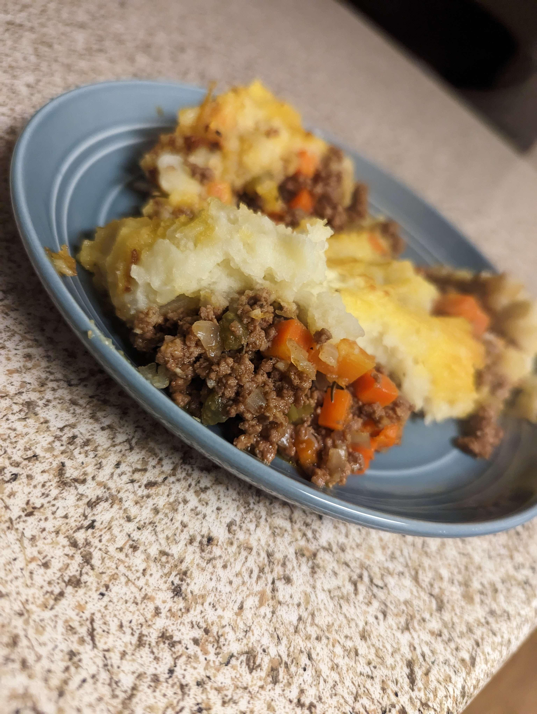

Shepard's Pie

Description
While in my apartment studying at UCI, I wanted to make a shepards pie in a dutch oven so I didn't have to buy a pan exclusively for it. The recipe I used can be found here.
Ingredient List
Potato Topping
- 2 pounds russet potatoes, peeled and quartered
- ½ cup milk
- ¼ cup butter
- salt and freshly ground black pepper, to taste
Meat Filling
- 2 tablespoons avocado oil or olive oil
- 1 large onion, diced
- 3 garlic cloves, minced
- 2 large carrots, peeled and diced
- 2 celery stalks, diced
- 1½ pounds ground lamb or ground beef
- 1 teaspoon salt
- ¼ teaspoon pepper
- 1 cup chicken broth, or if using ground beef use beef broth
- 1½ tablespoons tomato paste
- 1½ tablespoon apple cider vinegar
- 1 tablespoon Worcestershire sauce
- 2 teaspoons fresh rosemary, finely chopped
- 1 teaspoon fresh thyme, finely chopped
- 1 cup frozen peas
Steps
Potato Topping
- Place the potatoes in a pot on the stove and cover with cold water. Turn the heat to high and bring to a boil. Cook for 13 to 15 minutes, or until the potatoes are soft when pierced with a fork.
- Drain the potatoes in a colander, then return to the pot. Add the milk, butter, salt and pepper and mash until creamy.
Meat Filling
- Preheat your oven to 400°F (200°C). In a large oven-safe saute pan, heat the oil on medium heat. Add the onion and garlic and saute for a minute. Then add the diced carrots, diced celery, and lamb. Cook for 8 to 10 minutes or until the meat is browned. Use your spatula to break up the meat while cooking.
- Drain the fat from the pan and add the broth, tomato paste, Worcestershire sauce, apple cider vinegar, rosemary, thyme, salt and pepper. Simmer for about 5 minutes, until the sauce is slightly thickened.
- Add the frozen peas and stir together. Turn off the stove
Assembling Pie
- Use the back of your spatula to flatten the meat mixture into a single layer.
- Dollop the mashed potatoes on top of the meat and use a spoon or spatula to spread it flat to the edges. If desired, create texture in the potato topping with a spoon or fork.
- Bake the shepherd's pie until slightly golden, about 25 to 30 minutes. You can broil the top for 1 to 2 minutes as well.
Back to Main Page